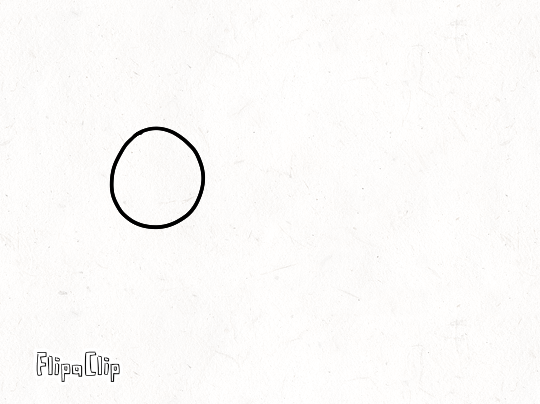
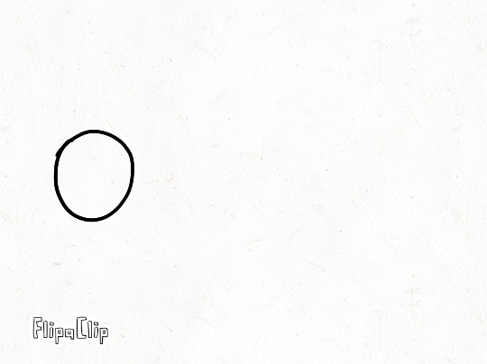
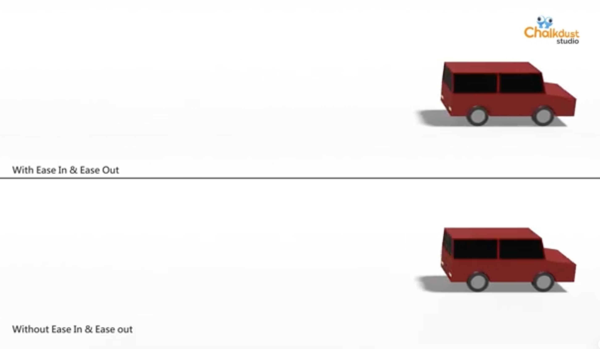

Ease in and Ease out
This principle refers to how objects and characters act as they speed up to start moving and slow down as they end it. The start and end positions will generally have more frames to convince the audience how something picks up speed and slow down as they complete the action.

In these two pictures, we can see moving balls, one of them is accelerating while the other is deccelerating. There are more frames closer to the starting point and end point to give the perception of speeding up and slowing down. Thus, the effect of ease in (speed up) and ease out (slowing down) is achieved.

On the other hand, these moving balls have no ease in nor ease out, therefore, the frames are positoned proportionally with no frames closer to the start and end point. This does not give the effect of acceleration nor deceleration and the viewer will not undestand how the object went at an abrupt speed.

Click image to see example.In this animation, we can see how one car speeds up, and then speeds down while the other is at constant speed with no acceleration. Applying ease in and ease out can work to make characters pr moving objects feel more natural, as opposed to not having it as you can see on the car without those effects.